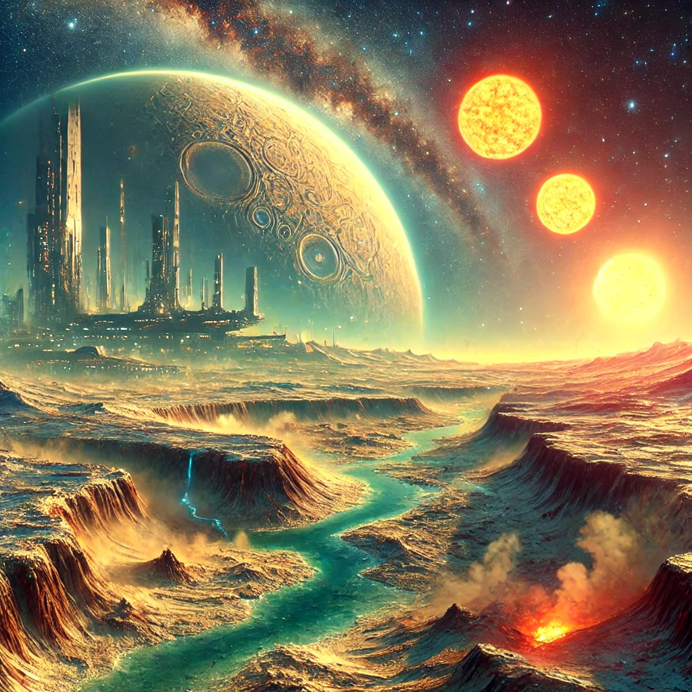
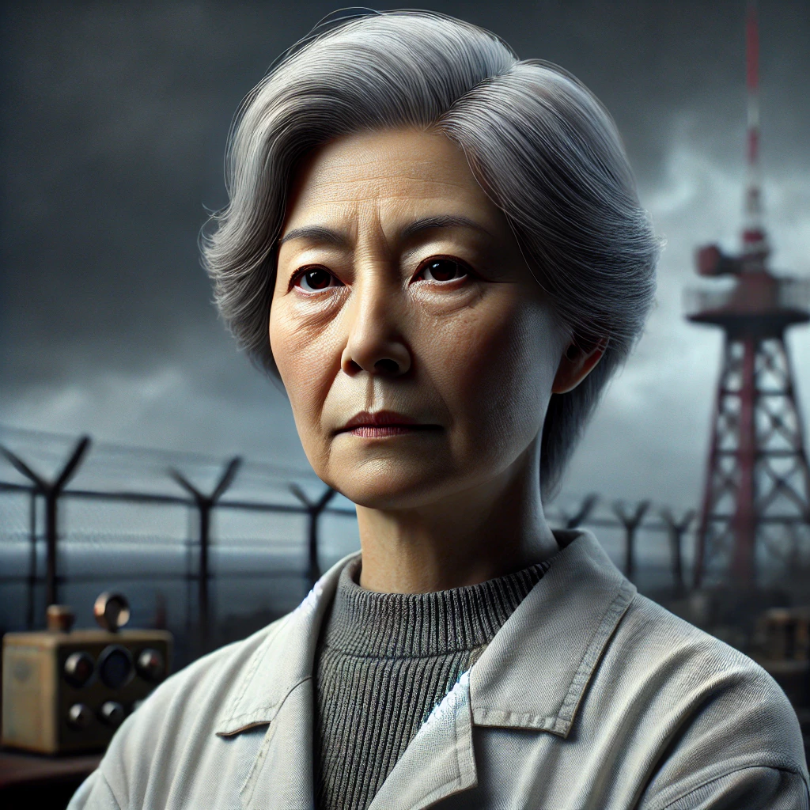
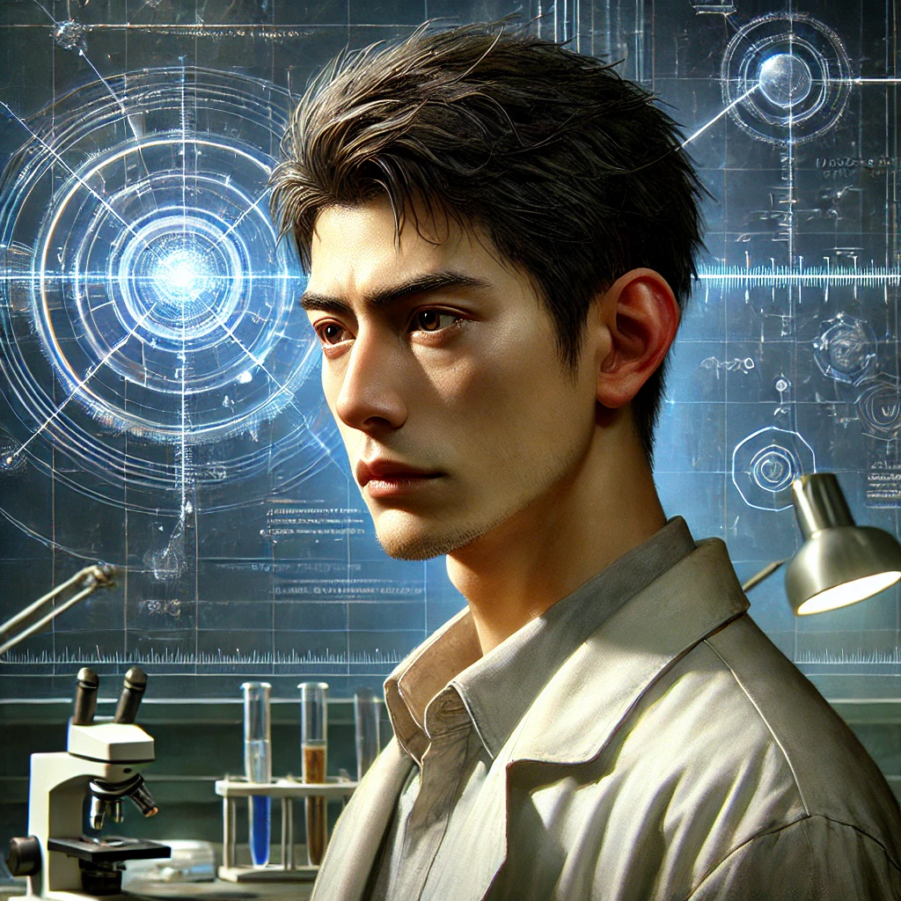
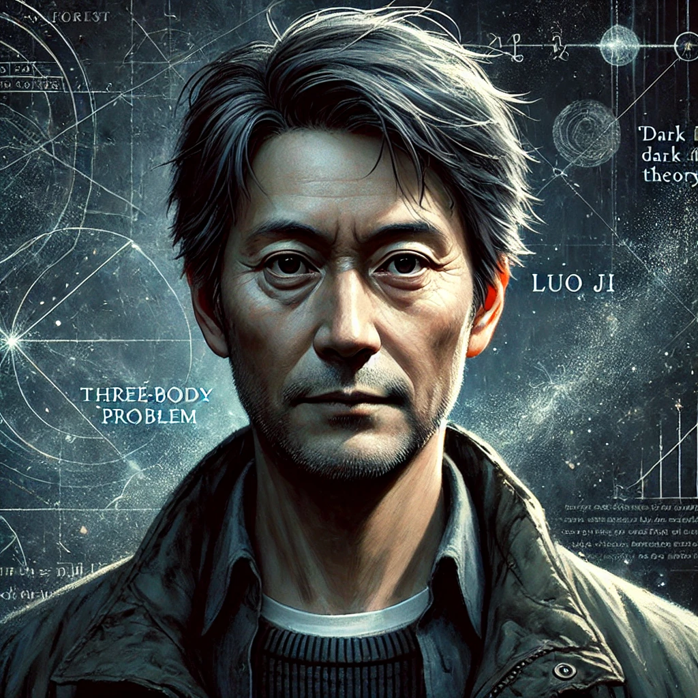
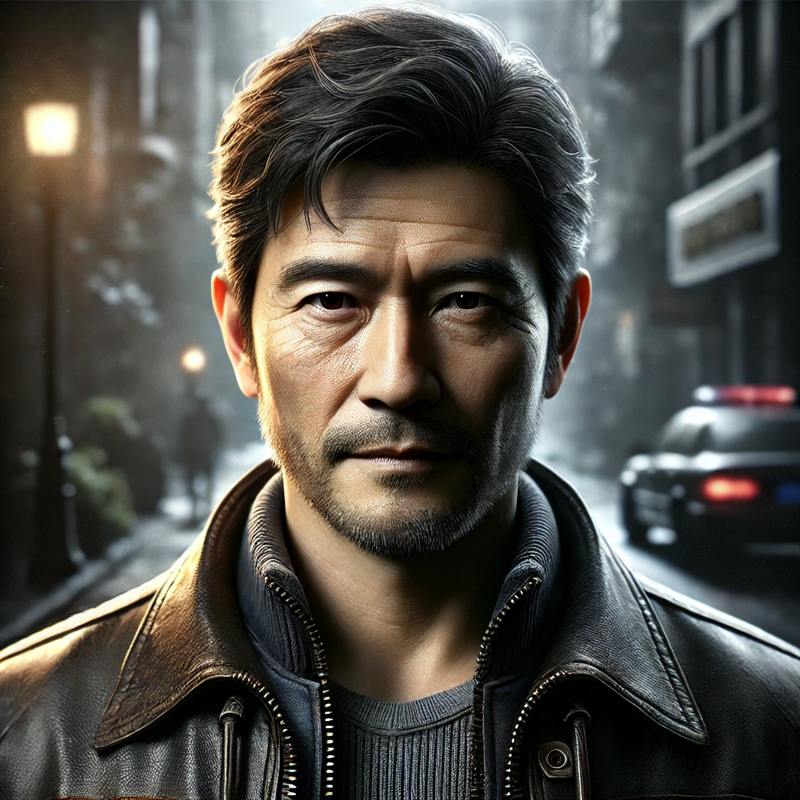
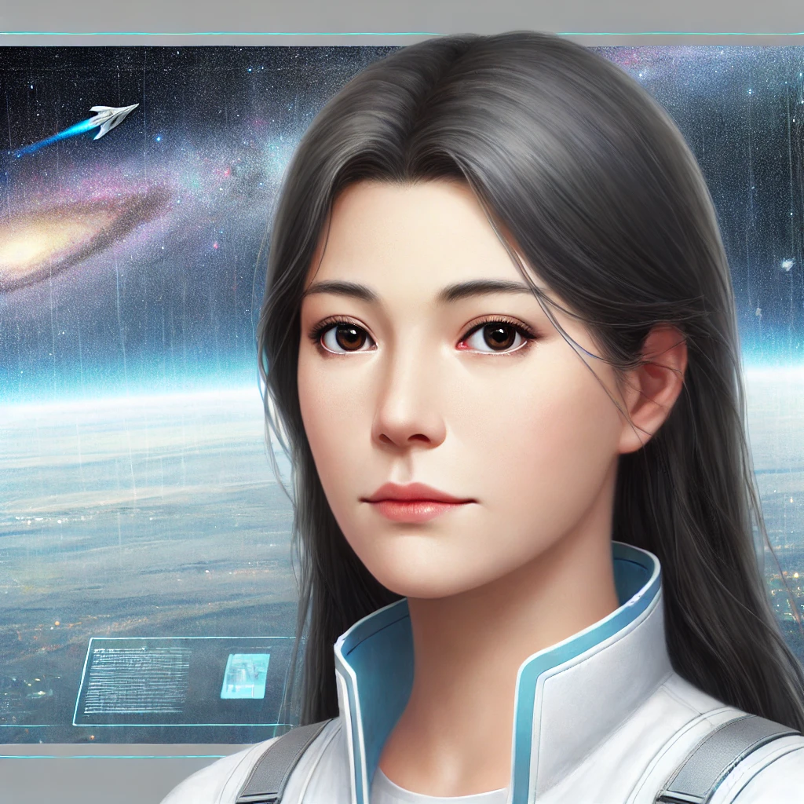

作者简介
刘慈欣，男，1963年生，山东省青岛市人，中国科幻作家，曾获得过雨果奖、银河奖等多个国际国内科幻文学奖项。代表作品有《三体》、《球状闪电》、《超新星纪元》等。
小说简介
《三体》是中国科幻作家刘慈欣创作的长篇科幻小说三部曲，包含《三体》、《黑暗森林》和《死神永生》。该系列以人类与外星文明三体人之间的互动与冲突为主线，深入探讨了宇宙文明的生存法则、科技进步带来的伦理问题以及人类命运的复杂性。
第一部：三体
讲述了文化大革命时期，天体物理学家叶文洁通过红岸基地向外星文明发送信号，意外与三体文明取得联系。三体文明位于一个不稳定的三恒星系统，面临生存危机，决定向地球发起侵略。人类中出现了“地球三体组织”，他们希望借助三体人的力量来改变地球的命运。
第二部：黑暗森林
引入了“黑暗森林法则”，阐述宇宙中的文明为了自保而选择隐藏自己的存在。人类面临外星入侵的威胁，必须采取措施来保护自身的存续，展开了一场智慧与勇气的较量
第三部：死神永生
将故事推向宇宙的终极命运，探讨了降维打击等复杂的科技概念，以及人类文明与三体文明之间的生存博弈。小说涉及时间、空间及宇宙的本质，引发读者对生命意义与未来的深思。
小说主要人物介绍
-
叶文洁
 身份： 天体物理学家，《三体》故事的关键人物。 人物介绍： 文化大革命期间，她因个人与家庭的创伤对人类社会失去信心，在红岸基地工作时，她向宇宙发送了信号，意外与三体文明取得联系。她是三体入侵地球的关键推动者，但这一行为也是基于对人类文明深深的绝望和对世界无奈的抗争。 -
汪淼
 身份： 纳米材料专家，《三体》第一部的主要叙述视角人物。 人物介绍： 汪淼作为科学家被卷入了三体危机的调查中。他通过参与“地球三体组织”和接触三体游戏，逐渐了解了外星文明的存在及其对地球的威胁。作为普通人类，他代表了理性科学家在面临外星威胁时的无力感与思索。 -
罗辑
 身份： 社会学家，人类面壁计划的执行者。 人物介绍： 在《三体》第二部中，罗辑意外被选为“面壁者”，负责设计对抗三体文明的战略。他提出了“黑暗森林理论”，并利用这一宇宙观成功威慑了三体文明。他的角色在三部曲中尤为重要，从一个对社会失望的普通人逐渐成长为拯救人类文明的关键人物。 -
史强
 身份： 警察，汪淼和罗辑的朋友。 人物介绍： 史强是一位有着丰富经验的老练警官，凭借其直觉与务实的态度，他在三体危机的调查过程中扮演了关键角色。虽然没有科学家的背景，但他以普通人的视角提供了务实的应对方案，帮助主角们面对复杂局势。 -
程心
 身份： 航天工程师，第三部《死神永生》的核心人物之一。 人物介绍： 程心作为一位理想主义者，代表了人类在面对宇宙时的善良与仁慈。然而，她的决策最终导致了人类文明在宇宙中面临更大的危机。她的故事线探讨了善意与现实的碰撞，以及个人在宏大宇宙进程中的无力感。 -
三体文明
身份： 外星文明，地球的敌对方。 人物介绍： 三体文明的母星位于一个三恒星系统中，他们在不断变化的恶劣环境下挣扎生存。为了确保自身文明的延续，他们计划侵略地球，寻找新的宜居星球。三体人冷酷、理性，代表了高等文明在面对生存危机时无情的逻辑。
大事记
- 1967年，叶文洁向外太空发射了一条无线电信号，意外与三体文明取得了联系。
- 2008年，地球三体组织成立，试图借助三体文明的力量改变地球的命运。
- 201X年，三体文明发动了对地球的入侵，人类陷入了生存危机。
- 201X年，罗辑提出了“黑暗森林理论”，成功威慑了三体文明。
- 201X年，地球面壁计划启动，人类开始寻找对抗三体文明的方法。
- 201X年，程心的决策导致了人类文明在宇宙中面临更大的危机。
经典语录
- “在这个世界上，所有的事情都是有可能的。”
- “人类的历史就是一部不断向前的科学史。”
- “宇宙是一个黑暗的森林，每一个文明都是潜伏在其中的猎人。”
- “人类的文明就像一座灯塔，照亮了黑暗的宇宙。”
- “人类的命运就像一颗流星，短暂而辉煌。”